Se abordara la problematica acerca de las drogas y las adicciones en el Cecyt 3, que son, como se generan, Marco teorico de esta, factores que influyen para el consumo de esta, entre otros temas.
Hipotesis
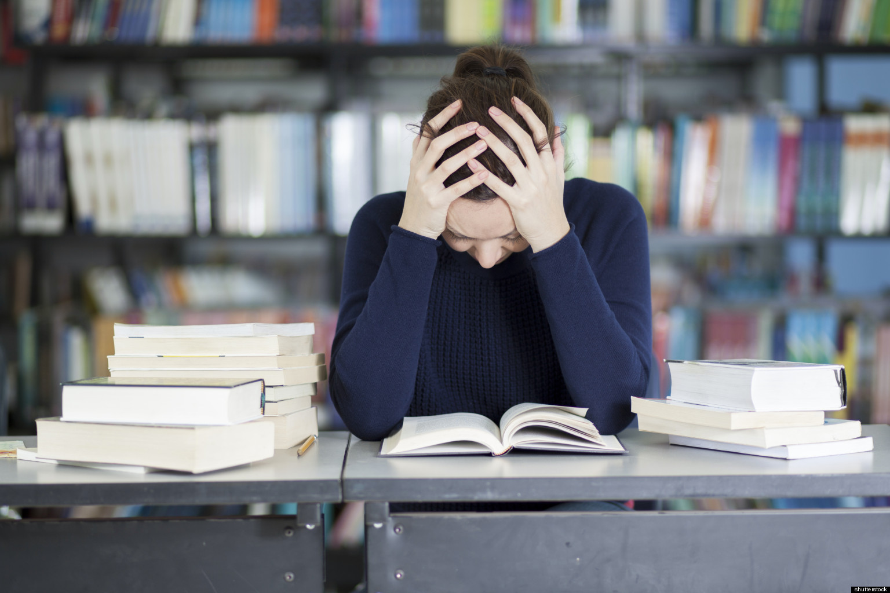 HIPOTESIS:
En el CECyT 3 Estanislao Ramírez Ruiz podrían existir diversos factores que causen el consumo de sustancias entre los estudiantes. Entre esos factores los mas comunes pueden ser la presión académica, ya que la exigencia en el CECyT 3 es muy pesada. Esta presión puede surgir por la carga excesiva de trabajo, misma que puede generar estrés y ansiedad, esto haciendo que los alumnos recurran al consumo de sustancias para inhibir el estrés, pero a su vez afectando el rendimiento de los estudiantes.
Asimismo, el contexto urbano en el que se ubica el CECyT 3 contribuye de igual forma a el consumo de estas sustancias debido a la presencia de grupos que promueven el consumo de drogas, como los famosos grupos Porriles
Tablas de verdad


Marco Legal
Regresar al menu
En México, el consumo de drogas es un tema delicado que ha estado presente
desde hace décadas. El gobierno ha creado leyes para tratar de controlar el uso de estas sustancias, ya sea para prevenir adicciones o para castigar a quienes las comercializan ilegalmente. Aquí te cuento, de forma sencilla, cómo está la cosa en cuanto a lo que dice la ley sobre este tema.
Primero que nada, la Ley General de Salud es la que manda cuando se habla de
prevención, tratamiento y control del consumo de drogas.
Aquí se establecen reglas sobre cómo deben actuar las instituciones de salud ante este problema. Se promueve que las personas con adicciones sean vistas como pacientes que necesitan ayuda, no como criminales.
Luego tenemos el Código Penal Federal, que pone las sanciones para quienes se
dedican al narcotráfico, ya sea produciendo, vendiendo o transportando drogas.
Aquí ya se habla de delitos graves, con castigos que van desde varios años de
cárcel hasta penas mucho más severas si se trata de crimen organizado o si hay menores de edad involucrados.
En la Ciudad de México, además, existe una ley más enfocada en la parte humana
del asunto: la Ley para la Atención Integral del Consumo de Sustancias
Psicoactivas. Esta busca prevenir y tratar el consumo, pero desde un enfoque más
de salud que de castigo. Se trata de apoyar a quienes ya cayeron en la adicción
para que puedan salir adelante con tratamiento, información y acompañamiento
psicológico.
Además, desde el 2009, en todo el país se permite que una persona tenga en su
posesión cantidades mínimas de ciertas drogas para consumo personal sin ser
arrestada, siempre y cuando no esté vendiéndolas o causando problemas. Esto
aplica para sustancias como marihuana, cocaína, heroína, LSD, entre otras, pero
ojo: la cantidad permitida es muy pequeña.
En 2017, se aprobó el uso medicinal del cannabis, lo que marcó un cambio
importante en la forma de ver esta planta. A partir de ahí, se empezaron a abrir
puertas para la investigación, el uso controlado y la fabricación de medicamentos
derivados del cannabis.
Situación del consumo de drogas en el CECyT No. 3 "Estanislao Ramírez
Ruiz"
Algunos alumnos han señalado que el consumo de sustancias, sobre todo
marihuana y vapeadores, es algo que se presenta dentro y fuera del plantel.
El Reglamento Interno establece sanciones para los estudiantes que sean
sorprendidos consumiendo o distribuyendo sustancias prohibidas, que pueden ir
desde una amonestación hasta la expulsión definitiva.
Además, existen campañas de prevención y pláticas informativas para los
alumnos, con el objetivo de generar conciencia sobre los riesgos del consumo y
cómo puede afectar su salud, sus relaciones y su futuro profesional. También hay
apoyo psicológico para quienes lo necesiten, promoviendo una cultura del
autocuidado y del acompañamiento.
Fuentes de información
Cámara de Diputados. (2024). Reformas a la Ley General de Salud y Código Penal Federal. Diario Oficial de la Federación.
Cámara de Diputados
Justia México. (s.f.). Ley para la Atención Integral del Consumo de Sustancias Psicoactivas de la Ciudad de México.
Justia México
El País. (2024, diciembre 4). La Cámara de Diputados aprueba reformas para prohibir el uso de vapeadores y el fentanilo.
El País.
Instituto Politécnico Nacional. (s.f.). Comité de Seguridad y Contra la Violencia ESIA.
Instituto Politécnico Nacional.
UPIICSA IPN. (s.f.). Inducción UPIICSA 2025.
UPIICSA IPN. (s.f.). Inducción UPIICSA 2025.
Definiciones
Regresar al menu
La adicción es una enfermedad crónica y recurrente del cerebro que se caracteriza por la búsqueda y el consumo compulsivo de una sustancia o actividad, a pesar de las consecuencias negativas. Afecta el sistema de recompensa del cerebro, generando cambios químicos y estructurales que dificultan el control sobre el consumo. Las adicciones pueden ser a sustancias (drogas, alcohol, tabaco) o conductuales (juegos de azar, tecnología, comida).
Características de la adicción:
2. ¿Qué es la adolescencia?
La adolescencia es la etapa del desarrollo humano entre la niñez y la adultez, que abarca aproximadamente desde los 10 hasta los 19 años, según la OMS. Se caracteriza por cambios físicos, psicológicos y sociales debido a la maduración del cuerpo y el cerebro.
Principales características:
3. ¿Qué es una droga?
Una droga es cualquier sustancia química que altera el funcionamiento del organismo, afectando el sistema nervioso central, el estado de ánimo, la percepción y el comportamiento. Las drogas pueden ser legales (alcohol, tabaco, medicamentos) o ilegales (cocaína, marihuana, heroína).
Clasificación de las drogas:
4. ¿Cuáles son las causas de una adicción?
La adicción es el resultado de una combinación de factores biológicos, psicológicos y sociales:
Factores biológicos:
Factores psicológicos:
Factores sociales:
5. Sustancias (drogas) más comunes entre los jóvenes
Las sustancias más consumidas en la adolescencia suelen ser aquellas de fácil acceso y con una percepción de bajo riesgo.
Entre ellas destacan:
6. ¿Cuáles son los estimulantes?
Son drogas que aceleran la actividad del sistema nervioso central, aumentando la alerta, energía y frecuencia cardíaca.
Ejemplos de estimulantes:
7. ¿Cuáles son los depresores?
Son sustancias que disminuyen la actividad del sistema nervioso central, provocando relajación, somnolencia y reducción de la ansiedad.
Ejemplos de depresores
:
8. ¿Cuáles consideramos adictivas? (Tabaco y alcohol)
El tabaco y el alcohol son drogas legales, pero altamente adictivas, especialmente en adolescentes.
Provoca tolerancia rápida, lo que lleva al consumo frecuente.
Está asociado a enfermedades pulmonares, cardiovasculares y cáncer.
Su uso en adolescentes es preocupante, especialmente con el auge de los vapeadores.FUENTES:
Fuente: Instituto Nacional sobre el Abuso de Drogas (NIDA).
Título: El uso indebido de drogas y la adicción., Fecha Publicación: 20218
Fuente: Organización Panamericana de la Salud (OPS).
Título: Salud del adolecente y del joven, Fecha publicación: 2021
Disponible en: Temas de salud del adolescente joven
Fuente: Oficina de las Naciones Unidas Contra la Droga y el Delito (UNODC)
Título: Informe Mundial sobre las drogas 2012. Fecha Publicación: 2012
Toma de decisiones
La toma de decisiones sobre el uso de drogas en adolescentes mexicanos (15 a 18 años)
La toma de decisiones es un proceso fundamental en la vida de cualquier persona, pero especialmente en la adolescencia, una etapa de cambios físicos, emocionales y sociales. Durante este periodo, el cerebro sigue desarrollándose y madurando, lo que puede dificultar tomar decisiones claras y responsables. En México, muchos adolescentes de entre 15 y 18 años enfrentan la decisión de consumir o no drogas, como alcohol, marihuana u otras sustancias, debido a la influencia de su entorno, la curiosidad o la presión social.
Este texto busca reflexionar sobre el proceso de toma de decisiones en torno al consumo de drogas en adolescentes mexicanos, considerando los factores que influyen, las posibles consecuencias y el apoyo disponible a través de instituciones de salud y gobierno.
Factores que influyen en la toma de decisiones en adolescentes
La decisión de consumir drogas no surge de un solo factor, sino de una combinación de elementos biológicos, emocionales y sociales. Entre los principales se encuentran:
- Desarrollo cerebral: Durante la adolescencia, el cerebro continúa madurando, especialmente la parte responsable de la toma de decisiones, el control de impulsos y la planificación. Consumir drogas en esta etapa no solo mata neuronas, sino que también detiene su desarrollo, afectando la memoria, la concentración y las emociones (National Institute of Mental Health, 2020).
- Influencia de los pares: Las relaciones sociales tienen un gran peso. Los adolescentes suelen estar rodeados de amigos o conocidos que pueden consumir drogas, y algunos de ellos los invitan a probarlas con frases como no pasa nada o es solo por diversión. Esta presión social puede hacer que un joven tome decisiones impulsivas solo por querer encajar o sentirse aceptado.
- Emociones: Las emociones en la adolescencia son más intensas, lo que puede llevar a tomar decisiones precipitadas. La búsqueda de nuevas experiencias y la curiosidad también son características de esta etapa.
- Falta de conocimiento y experiencia: Muchos adolescentes desconocen los efectos reales del consumo de drogas y las consecuencias legales o de salud. Esta falta de información los vuelve vulnerables a tomar decisiones sin medir los riesgos.
- Presión social: A veces, los adolescentes consumen drogas porque sienten que es la única manera de encajar en su grupo de amigos. La necesidad de aceptación es muy fuerte en esta etapa.
Un adolescente mexicano de 17 años empieza a asistir a fiestas donde sus amistades consumen marihuana, alcohol y otras drogas. Uno de sus amigos le ofrece probar, diciéndole que no pasa nada y que es para divertirse. El joven se siente confundido: por un lado, está la presión social y la curiosidad; por el otro, el miedo a las consecuencias y la sensación de que no es correcto.
Búsqueda de información y apoyo
El adolescente decide buscar información confiable para tomar una mejor decisión. Encuentra datos relevantes en instituciones de salud y gobierno, como:
- CONADIC (Comisión Nacional contra las Adicciones): Explica los efectos físicos, psicológicos y sociales del consumo de drogas.
- Secretaría de Salud: Señala que el consumo de drogas en la adolescencia puede causar daños cerebrales irreversibles y afectar el desarrollo emocional y escolar.
- Centros de Atención Primaria en Adicciones (CAPA) e IMSS: Ofrecen atención psicológica gratuita, orientación y tratamiento a jóvenes que consumen o están en riesgo.
- Línea de la Vida: Teléfono gratuito 800 911 2000, disponible 24/7 para brindar ayuda.
- Programa Te Quiero Vivo: Programa de prevención enfocado en jóvenes mexicanos.
- Ley General de Salud: Establece sanciones por consumo, posesión o distribución de drogas.
- Además, descubre que según el INEGI (2021), el 17.2% de los adolescentes entre 12 y 17 años en México han probado alguna droga ilícita al menos una vez.
El adolescente reflexiona sobre las opciones disponibles:
- Aceptar la droga para encajar con sus amigos.
- Rechazar la oferta y alejarse del grupo que lo presiona.
- Pedir ayuda a su madre o al orientador escolar. Acudir a un CAPA para recibir apoyo profesional.
- Involucrarse en actividades culturales, deportivas o sociales para mantenerse ocupado y saludable.
Cada decisión tiene posibles consecuencias, tanto positivas como negativas:
- Aceptar consumir drogas: Puede traer problemas legales, riesgo de adicción, bajo rendimiento escolar y conflictos familiares. A corto plazo, puede “encajar” con el grupo, pero a largo plazo, los daños son mayores.
- Rechazar y alejarse: Aunque podría perder a esos amigos, ganaría salud, autoestima y bienestar.
- Pedir ayuda o acudir a un CAPA: Le permitiría recibir apoyo profesional, mejorar su autoestima y aprender a manejar la presión social.
- Buscar nuevas actividades: Le ayudaría a desarrollar habilidades, mejorar su rendimiento académico y fortalecer su salud mental y física.
Después de analizar la información, el adolescente decide no consumir drogas. Habla con su madre sobre lo ocurrido y acude al orientador de su escuela. También se inscribe en un taller de arte y en clases de fútbol para enfocarse en actividades positivas. Aunque no fue fácil, sabe que tomó la mejor decisión para proteger su salud, su futuro y su dignidad.
Evaluación de resultados
Con el paso de las semanas, el adolescente se siente más motivado, ha mejorado su desempeño escolar y ha hecho nuevas amistades. Aunque fue difícil al principio, se siente orgulloso de haber elegido lo mejor para su vida.
Conclusión
La toma de decisiones sobre el consumo de drogas es un proceso complejo que depende de muchos factores: el desarrollo cerebral, las emociones, la presión social y la información disponible. Es fundamental que los adolescentes tengan acceso a fuentes confiables de información, así como apoyo de sus familias, escuelas e instituciones de salud.
Referencias
- American Psychological Association. (2020). Desarrollo adolescente.American Psychological Association
- Comisión Nacional contra las Adicciones (CONADIC). (s.f.). Información sobre drogas.Comisión Nacional contra las Adicciones
- Erikson, E. H. (1963). Childhood and society. W. W. Norton & Company.
- Instituto Nacional de Estadística y Geografía (INEGI). (2021). Encuesta Nacional de Consumo de Drogas, Alcohol y Tabaco. Instituto Nacional de Estadística y Geografía s
- National Institute of Mental Health (NIMH). (2020). El cerebro de los adolescentes: 7 cosas que debes saber.National Institute of Mental Health
Ilustracion de adicciones
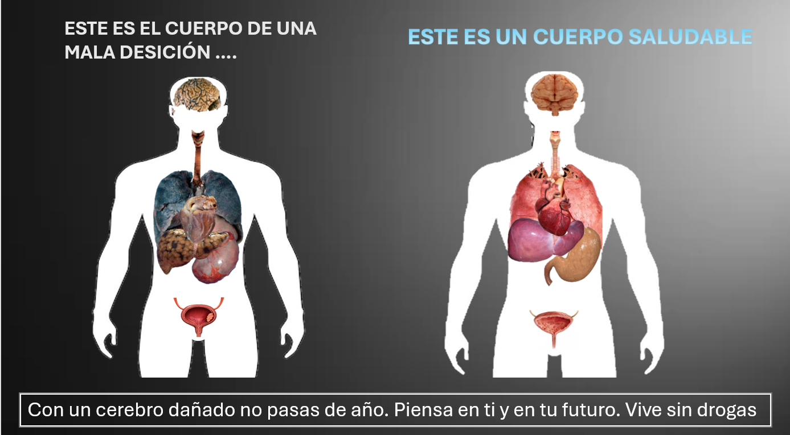
Glosario en ingles
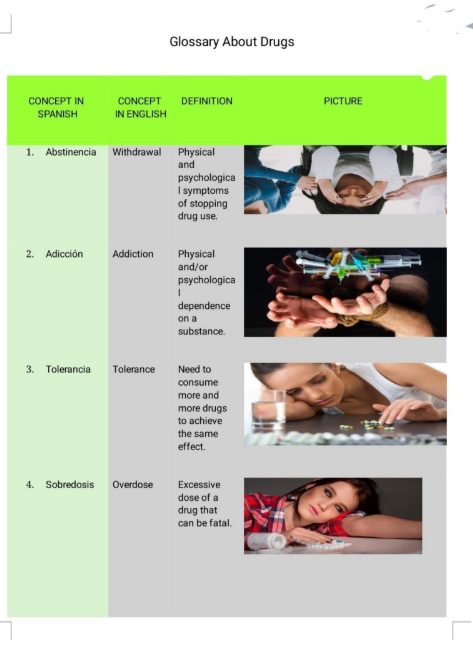 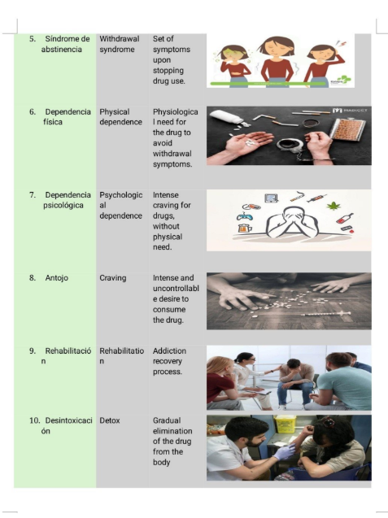 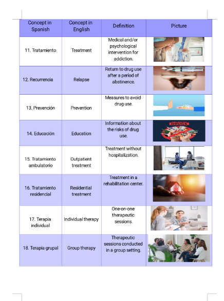 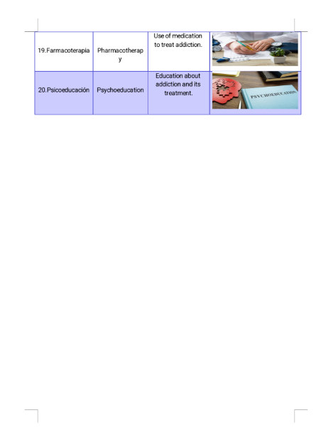 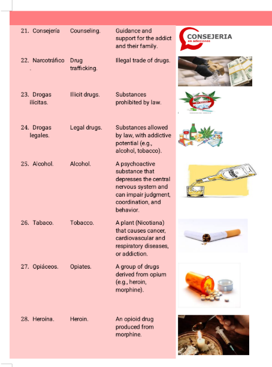 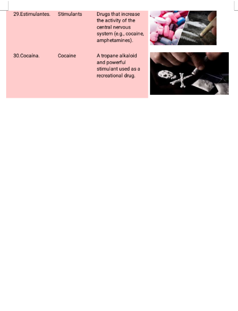 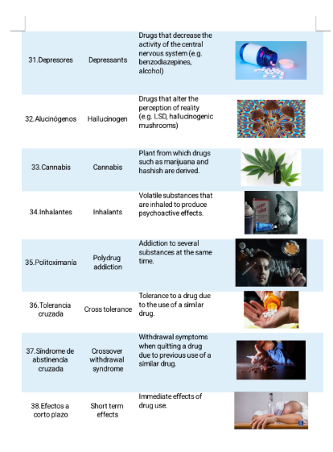 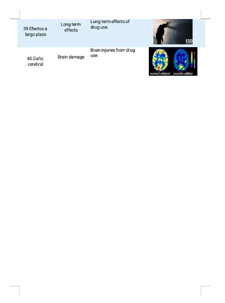 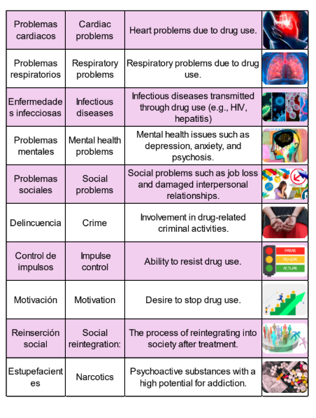
Graficas
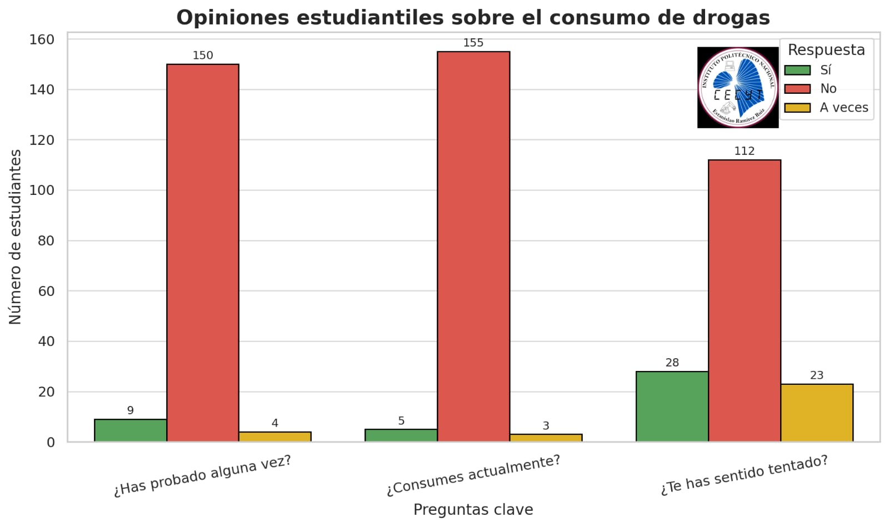